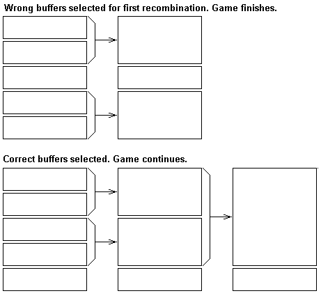
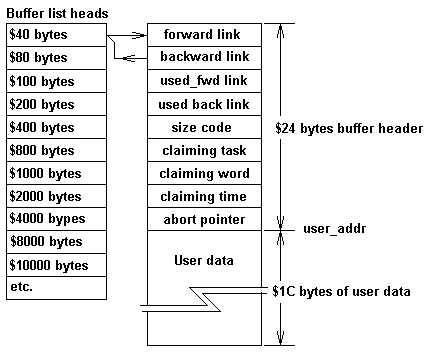
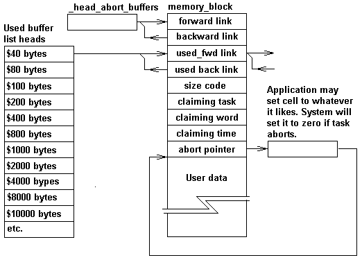

TCP/IP places unknown memory demands on a system.
IP requires you to receive an unknown number of datagrams, of unknown size. The datagrams could be IP fragments. You can have an unknown number of datagrams being reconstructed from the fragments. The number of routes is unknown. The number of entries in your ARP table is unknown, and so it goes.
If you are going to support TCP/IP in a manner that is close to the RFC requirements, pre allocation of the memory needed for IP reception is difficult. You have to support ALLOCATE and FREE.
This article describes the COLDFORTH heap management system.
Dealing with fragmentation was and is the most difficult problem.
A system that doesn't use a MMU for memory control has to create a small memory area from a larger area, leaving a remainder. When the small area is returned to the heap management system, there is a fair chance that the some of the remainder has been allocated to another task and the large area can no longer be reconstructed.
The COLDFORTH heap management system does not solve this problem, but the design makes it possible to quickly recombine buffers that are meant to be combined.
Two design decisions set the tone of the whole heap management package. Both reduce de-fragmentation costs.
Memory-blocks from which user buffers are created are binary multiples, that is they have a size $40 bytes, $80 bytes, $100 bytes etc.
The address of a memory block has bits below its size set to zero. That is, the address of a $80 byte memory block can have the base address $180, but cannot have the base address $140. The following diagram tries to demonstrate the reason for this restriction.
Because we insist that the bits below the block size are zero the first case will not happen.
The heap management system can be divided into two parts. The code you interact with when getting or returning a buffer. And the low level task that recombines the buffers.
The following diagram shows a $40 byte memory block linked into the $40 byte Empty list.
The following is worth noting:
If you use the word ALLOCATE you will be returned a memory block from one of the empty lists. For example a buffer created from a $40 byte memory block will be returned for any ALLOCATE request less than $1C bytes. The memory block will be $40 bytes, the address returned will be after the system header, and no matter what length requested, the usable data area will be $1C bytes.
Any ALLOCATE request greater than $1C bytes and less than $5D bytes will be returned a buffer created from a memory block that was linked into the $80 byte memory block list.
This may seem pretty dam inefficient, from a $40 byte memory block the user only gets $1C bytes of usable memory. If you want a $8000 byte buffer, it is created from a $10000 byte memory block. The heap management system has given you a usable buffer $7FDC bytes longer than you need.
Yep it's pretty inefficient, but it's a lot better than having your memory broken up into a lot of small chunks that you can't put back together.
When you ask for a memory area, the heap management system first goes to the memory block list that has memory blocks that will just satisfy your needs. If there is no buffer available in the list, the buffer splitting routine _get_more_buffers is called. This routine will go to the next list and attempt to split a buffer form that list into two. If there is no buffer in that list it will go to the next list and ....... _get_more_buffers is a recursive routine.
Life is tough for _get_more_buffers , the COLDFIRE heap management system has to be able to meet the needs of tasks running at many different priorities, in a manner that doesn't hold the system up.
A low level task can be using _get_more_buffers just to find that a high level task has pinched the buffers created. _get_more_buffers has to be happy and just do the job again, this it does.
The buffer return words and the buffer_reclaim task co-operate. The buffer return words return the buffers to the list in an address sorted order. This may seem like an excessive runtime overhead. Two things have to be remembered. The buffer_reclaim is trying to keep the list short, and life would be very difficult for buffer_reclaim if the list were not sorted.
Because the lists are sorted, because the buffers are allocated in binary multiples, and because the bits below the memory block size have to be zero, buffer reclaim is reasonably simple.
Buffer reclaim deals with one buffer size list at a time, trying to combine and move the resultant buffer to the next list. If the base address of the buffer is an acceptable address for the next list up, it checks to see if the next buffer in the list is the next memory block ( _?joinable ). If both these conditions are met the reclaim word joins the buffer and puts it in the next list.
Seems simple. Life gets complicated because this must occurs with high priority tasks returning and claiming buffers. A buffer that was in the list when the test was done, may be in use by the time joining is to occur. The complications and how they are dealt with can be seen by looking at the code for _?join_buffer_code
As soon as you introduce a heap management system, you have memory leaks. If you keep track of memory usage you can determine the guilty and dismiss the innocent
An abort buffer allocated to a task is linked in as shown in the following diagram.
The used buffer list heads are only used by words that display buffer usage, for example .buffers and .buffers_used. The abort list is used to return buffers to the central pool on a task abort. The word get_abort_buffer ( pointer n--addr) allows you to supply the address of a cell that is reset to zero on a task abort. The cell is typically used to store the address of the buffer as shown in the diagram. The application however is free to use it as it pleases.
The COLDFIRE heap management system provides four ways of getting a memory block.
| word | description | returning word |
| get_buffer ( n --) | The address of the buffer will be returned by buffer. If a task abort occurs the buffer will be returned to the free buffer pool. | kill_buffer ( addr --) |
| get_abort_buffer ( pointer n--addr) | The system will assume the address of the buffer is stored at pointer, but it doesn't do the store for you. If a task abort occurs the value stored in pointer will be set to zero, and the buffer will be returned to the free buffer pool. If the get_abort_buffer operation fails, an abort occurs. | kill_abort_buffer ( addr--) |
| get_free_buffer ( n--) | Word returns the address of the buffer. The buffer will not be returned if the task aborts, it is your responsibility. Buffers used to transfer data to TCP/IP ( pep buffers) must be created in this way. | kill_free_buffer ( addr--) |
| ALLOCATE ( n --addr ior) | If a task abort occurs the buffer will be returned to the free buffer pool. If the ALLOCATE operation fails ior points to a string describing the error. | FREE ( addr--) |
The standard gives us one way to allocate memory from the heap, COLDFORTH gives you four. Some may ask. What is this nonsense?.
The standard is very quiet on what happens when a task aborts. Should the memory claimed by the task be returned, or should if be left to the programmer to use CATCH and THROW to return the memory in an orderly fashion. I believe the system should reclaim the memory. When programming you want to deal with the problem not side issues such as this.
If ALLOCATE returns memory to the heap management system on an abort, then you need a set of words that does not. When using memory blocks to move data between tasks it is important that aborting one task doesn't invalidate memory owned by another. get_free_buffer and kill_free_buffer are used for this purpose.
get_about_buffer and kill_abort_buffer are used to deal with data areas created from the heap. For example:
VARIABLE %data_pointer : setup_task ( --) #data_length get_abort_buffer %data_pointer ! ; :task somthing ( --) setup_task task_action ;task
If the task aborts the data area will be returned to the heap management system, and the cell containing the pointer reset back to zero.
get_buffer and kill_buffer are historic CVS words. They are a lot easier to use than ALLOCATE and FREE. The following code demonstrates their use.
: do_some_stuff ( addr n --) DUP get_buffer buffer SWAP MOVE $100 buffer do_stuff get_buffer \ now dealing with second buffer buffer do_more_stuffer kill_buffer \ now dealing with first buffer buffer print_stuff kill_buffer ;
Basically get_buffer and kill_buffer take the buffer address away from the stack. There is a word ( buffer ) that returns the address of the current buffer.